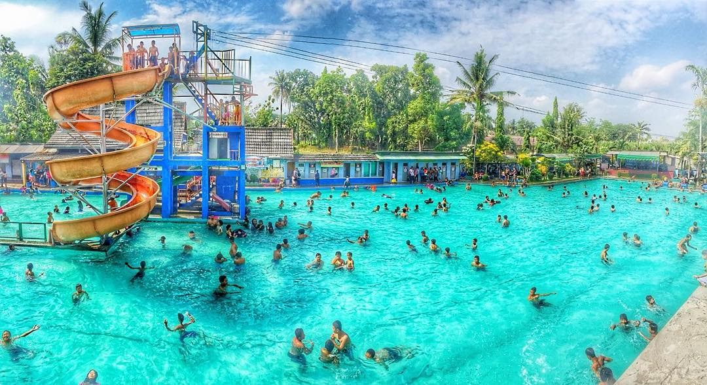
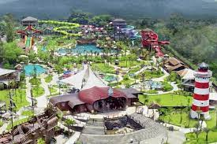

Aquasplash
Lokasi : DAsem Ngecis, Sitimulyo, Kec. Piyungan, Kabupaten Bantul, Daerah Istimewa Yogyakarta 55792
Harga Tiket : Rp 27.000-Rp 36.000
Jam Buka : 08.00-17.00 WIB
Maps

Balong Waterpark
Lokasi : Jl. Pleret No.KM. 1,5, Banjardadap, Potorono, Kec. Banguntapan, Kabupaten Bantul, Daerah Istimewa Yogyakarta 55194
Harga Tiket : Rp 20.000 - Rp 25.000
Jam Buka : 09.00-17.00 WIB
Maps
Harga Tiket : Rp 20.000 - Rp 25.000 Jam Buka : 09.00-17.00 WIB
Maps

Citra Grand Mutiara
Lokasi : Perumahan Citra Grand Mutiara, Jl. Wates, Perengdawe, Balecatur, Kec. Gamping, Kabupaten Sleman, Daerah Istimewa Yogyakarta 55752
Harga Tiket : Rp 35.000 - Rp 55.000
Jam Buka : 08.30-18.00 WIB
Maps
Harga Tiket : Rp 35.000 - Rp 55.000 Jam Buka : 08.30-18.00 WIB
Maps

Galaxy Waterpark
Lokasi : Jl. Wonosari No.6, Kalangan, Baturetno, Kec. Banguntapan, Kabupaten Bantul, Daerah Istimewa Yogyakarta 55196
Harga Tiket : Rp 20.000 - Rp 45.000
Jam Buka : 09.00-16.00 WIB
Maps
Harga Tiket : Rp 20.000 - Rp 45.000 Jam Buka : 09.00-16.00 WIB
Maps

Grand Puri Waterpark
Lokasi : Jl. Parangtritis KM. 9,5, Gabusan, Balong, Timbulharjo, Kec. Bantul, Kabupaten Bantul, Daerah Istimewa Yogyakarta 55186
Harga Tiket : Rp 25.000-Rp 35.000
Jam Buka : 09.00-17.00 WIB
Maps
Harga Tiket : Rp 25.000-Rp 35.000 Jam Buka : 09.00-17.00 WIB
Maps
Titonirmolo Waterpark
Lokasi : Jl. Manisrenggo No.KM.1, Pemuktibaru, Tlogo, Prambanan, Klaten, Jawa Tengah, Indonesia, 57454
Harga Tiket : Rp 15.000 - Rp 20.000
Jam Buka: 07.00 - 17.00 WIB
Maps
Harga Tiket : Rp 15.000 - Rp 20.000 Jam Buka: 07.00 - 17.00 WIB
Maps

Waterbyur
Waterbyur
Lokasi : Jl. Pramuka No.30, Area Sawah, Trirenggo, Kec. Bantul, Kabupaten Bantul, Daerah Istimewa Yogyakarta 55714
Harga Tiket : Rp 10.000
Jam Buka: 07.00 - 17.00 WIB
Maps
Harga Tiket : Rp 10.000 Jam Buka: 07.00 - 17.00 WIB
Maps

Jogjabay
Jogjabay
Lokasi : Jalan Utara, Jenengan, Maguwoharjo, Kec. Depok, Kabupaten Sleman, Daerah Istimewa Yogyakarta 55281
Harga Tiket : Rp 100.000 - Rp 125.000
Jam Buka: 09:00 – 16:00WIB
Maps
Harga Tiket : Rp 100.000 - Rp 125.000 Jam Buka: 09:00 – 16:00WIB
Maps